Two continuous maps are homotopic, written
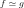
, if there is a continuous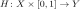
with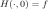
and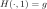
. A map is a homotopy
equivalence if there is
is a homotopy
equivalence if there is 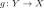
with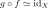
and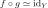
; the spaces are then homotopy equivalent. A space homotopy equivalent to a point is contractible.Homotopy is an equivalence relation on the continuous maps
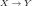
, and it is compatible with composition: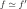
and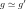
imply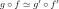
.Reflexivity uses
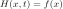
; symmetry,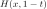
; transitivity, the concatenation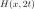
for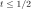
and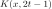
for , continuous by the pasting lemma since both formulas give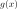
at .
.
For compatibility, if  is a homotopy from
is a homotopy from  to
to
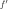
then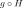
is one from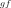
to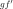
; and if is one from
is one from
 to
to 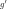
then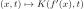
is one from to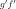
. Composing the two homotopies by transitivity gives the claim.
Let  . A retraction is a continuous
. A retraction is a continuous
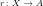
with ; it is a deformation retraction if moreover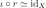
, where is the inclusion.
is the inclusion.  is then a deformation
retract of
is then a deformation
retract of  .
.
If is a deformation retract of then the inclusion
 is a homotopy equivalence.
is a homotopy equivalence.
Take
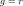
. Then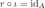
exactly, and by hypothesis.
A convex subset  of
of  is contractible; more generally any
two maps into are homotopic.
is contractible; more generally any
two maps into are homotopic.
For continuous
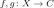
, the straight-line homotopy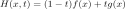
takes values in by convexity and is
continuous, being built from continuous operations. Taking
constant and 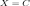
,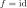
, shows the identity of is
homotopic to a constant, which together with the maps to and from a
point gives the homotopy equivalence.
If is a homotopy equivalence and
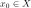
, then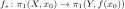
is an isomorphism. In particular a contractible space has trivial fundamental group, and homotopy equivalent path-connected spaces have isomorphic fundamental groups.
First, homotopic maps induce the same homomorphism up to the change of
basepoint: if is a homotopy from  to
to  and
and  is
a loop at
is
a loop at  , then
, then
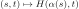
is a homotopy of loops except that the basepoint traces the path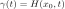
; composing with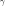
at both ends shows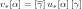
, so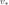
is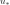
followed by the change-of-basepoint isomorphism.
Now let be a homotopy inverse of . Then
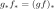
equals composed with
an isomorphism, hence is an isomorphism; so
composed with
an isomorphism, hence is an isomorphism; so  is injective and
is injective and
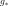
surjective. Applying the same to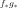
shows is injective too, hence bijective, and then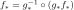
is bijective.
The theorem is what makes the fundamental group computable: one replaces
a space by any homotopy equivalent one, and a punctured plane, an
annulus and a circle become the same problem. It also fixes the limits
of the invariant – it cannot distinguish spaces that are homotopy
equivalent, so and a point have the same
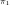
for every , and separating those requires the higher homotopy or
homology groups.
, and separating those requires the higher homotopy or
homology groups.